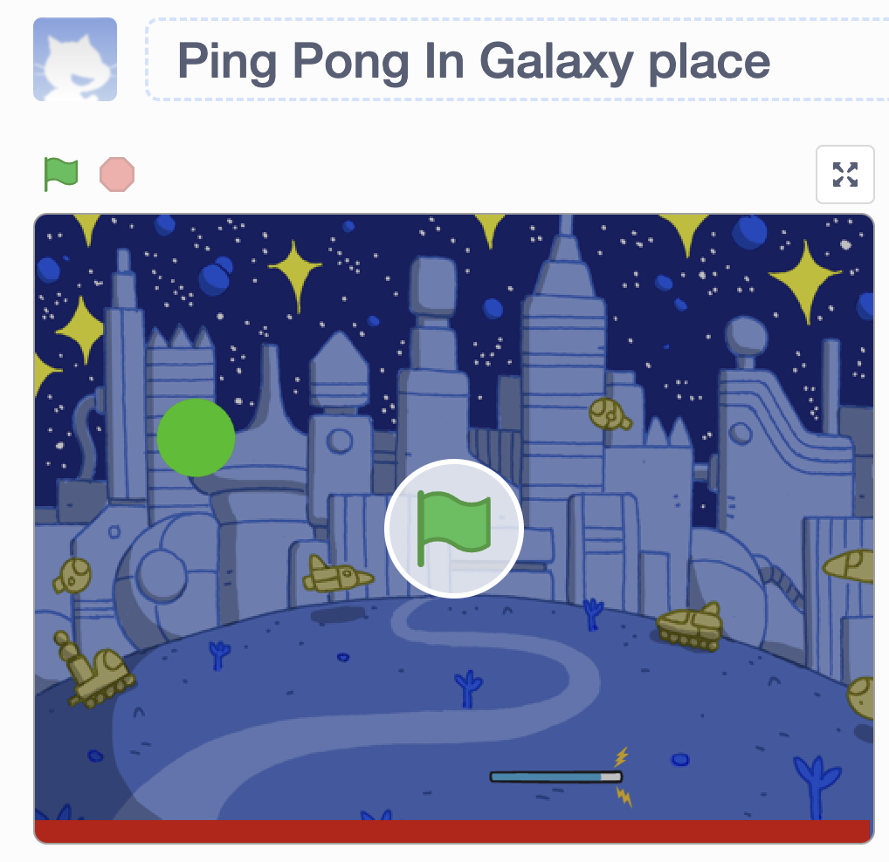
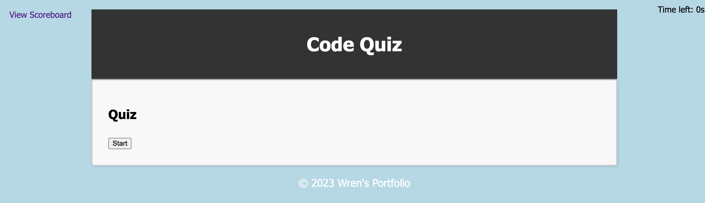

About Me

Overall, present myself as a highly skilled and passionate professional who is ready to take on new challenges and achieve great things.
My Work
-
Ping Pong Game
My coding project is a ping pong game that takes place in a galaxy environment. I am using Scratch, a block-based programming language, to create the game. The player controls a paddle on one side of the screen and tries to hit a ball that bounces back and forth between the two sides of the screen. The goal of the game is to keep the ball from hitting the player's side of the screen. The galaxy environment adds an extra level of excitement and immersion to the game. To create the game, I am using Scratch's built-in features for creating sprites, adding movement, and detecting collisions. I have also programmed the game to keep score and to reset the game when one player reaches a certain score. Overall, my project is a fun and engaging way to play ping pong in a unique and visually appealing setting.
-
My Landing Page

I have created a landing page for my website using HTML and CSS. The landing page serves as an introduction to my website and encourages visitors to explore further. The page features a header with a navigation menu, a hero section with a prominent call-to-action button, and several sections that highlight the key features or offerings of my website. I have used CSS to style and layout the page, making it visually appealing and user-friendly. My landing page project demonstrates my skills in HTML and CSS and showcases my ability to create a professional-looking website that engages visitors and encourages them to take action.
-
Project Title 3
I have created a website called "CSS Snippet Cheat Sheet" that provides web developers with a collection of CSS snippets. The website was built using HTML and CSS reset, along with a custom style.css file. Its purpose is to offer a quick reference for commonly used CSS snippets that can help developers enhance their web projects. To achieve this, I used CSS reset to standardize default styles across web browsers and created a style.css file to customize the design and layout of the content. The website includes a navigation menu, a header with a clear title, and several sections that organize the CSS snippets by function or feature, with examples provided to demonstrate their usage. Overall, my CSS Snippet Cheat Sheet project showcases my skills in HTML and CSS while also offering developers a useful resource for improving their CSS coding abilities.